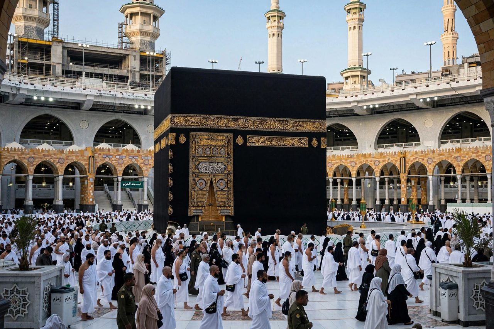

Five Pillars of Islam
From Wikipedia, the free encyclopedia

The Five Pillars of Islam are the five basic ritual acts considered obligatory for Muslims: the declaration of faith (Shahada), daily prayer (Salah), almsgiving (Zakat), fasting during Ramadan (Sawm), and the pilgrimage to Mecca (Hajj) at least once in a lifetime for those able. The framework derives from the Hadith of Gabriel and organises the practice of Sunni Islam; Shia Islam shares the acts within its own lists of principles and branches.
The pillars
Shahada: the testimony 'There is no god but God, and Muhammad is the Messenger of God', recited with conviction — it marks conversion and is whispered to newborns and the dying. Salah: ritual prayer five times daily (dawn, noon, afternoon, sunset, night), preceded by ablution (Wudu) and directed toward the Qibla (the Kaaba). Zakat: an annual alms, conventionally 2.5% of accumulated savings above a threshold (nisab), for the poor and other Quranic categories. Sawm: fasting from dawn to sunset through Ramadan — abstaining from food, drink and marital relations — with exemptions for illness, travel, childhood and others. Hajj: the pilgrimage in Dhu al-Hijjah, re-enacting rites of Abraham, Hagar and Ishmael, drawing some two to three million pilgrims yearly in recent times.
Significance
The pillars unite theological commitment with embodied discipline and social welfare (zakat redistributes wealth; Ramadan fasting builds empathy and community). Their performance varies in observance by country and individual, but they form the shared skeleton of Muslim life across cultures. In Shia theology the analogous usul al-din (roots of religion) and furu al-din (branches, which include the same five acts among ten) organise the same material differently.